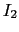
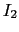

Interfaces are applied to specify the allowed communication between communicating entities. The contracts specified in the interface (method contracts, invariants) characterize the valid behaviour of these entities. In object oriented languages an object can act in two roles with respect to an interface: server or client. In the server role, the object "`implements"' or "`realizes"' the operations specified in the interfaces and observes the method pre- and postconditions. In the client role, the object calls services offered in a given interface by fulfilling the precondition and expecting the postcondition. However, in both cases the interface and its associated contracts serve both roles as contract on which they can rely.
A major problem which pre- and post-conditions is that they usually should express the semantics of the contract. However, (formal) specification languages are often not incapable to specify semantics in a comprehensive way. Additionally, semantics often stem from an implicit or intuitive understanding of certain modelled objects. During requirements engineering as much as possible of this intuitive understanding should be formalised. Nevertheless, the correctness of this step can not be proven only validated. For the interfaces, interface hierarchies and later in this section the interface relations we assume that the relationships are built to satisfy semantic constraints. For the given reasons, we can not check this in the PCM implementation. Only some basic constraints can be validated but that is far away from being comprehensive. To summarize, in the reminder it is assumed that the use of an interface in a relation guarantees semantic correctness guaranteed by the developer role that created the respective model instance.
As with legal contracts, interfaces can exist even when no one actually declared their commitment to them, i.e., there is no specific client or server. For example, this is used to define a certain set of standardised interfaces of a library to enable the construction of clients and servers of these libraries independently. Thus, in our model the concept Interface exists as first class entity which can be specified independent from other entities.
The specification of the contract which is represented by an interface can be enhanced by including a specification of the sequence in which the interface's operations can be used. This kind of information is called a protocol. The protocol is a special class of the more general concept of arbitrary preconditions for methods. Any kind of protocol can be expressed via preconditions. Thus, the protocol is an abstraction of the set of all preconditions. The abstraction is often based on the expressiveness of the used specification formalism. For example, consider using the accepted language of a finite state machine as protocol specification formalism. With this formalism, it is impossible to express the valid call sequences of a stack exactly (the amount of push calls always has to be equal or greater then the amount of pop calls). Nevertheless, FSM-protocols can be analysed with quite efficient algorithms.
We accept in our model that there is a trade-off and deal with the problem by having an extensible meta schema for protocol specifications. A meta schema can be added as plugin for the chosen modelling formalism for protocols. In earlier work, we often used FSM based protocol specifications to check certain interoperability classes of component interactions.
Using the information described above, the subtype relationship of any two arbitrary interfaces  can be specified as follows. Interface
can be specified as follows. Interface  is subtype of  if it is able to fulfil at least the contracts of . In detail, this means it has to be able to handle all the (single) method calls which can handle. Additionally, it must also at least support the call sequences which supports.
is subtype of  if it is able to fulfil at least the contracts of . In detail, this means it has to be able to handle all the (single) method calls which can handle. Additionally, it must also at least support the call sequences which supports.
However, having the concept of signatures and their protocol, there a still some open questions. For example, Szyperski et al. [] highlight some subtle problems in component communication resulting from additional concepts which are also important during the interaction of components. The insufficient specification of multi-threaded interaction, re-entrance or transactional behaviour are only examples of ongoing research in this field. Additionally, there are no widely established formalisms to specify Quality of Service constraints on a contractual basis (because QoS specifications can be expressed only in a parametric way). Hence, as there are no settled results in these fields of research yet, our model currently only includes the concepts of signatures and basic protocol information.